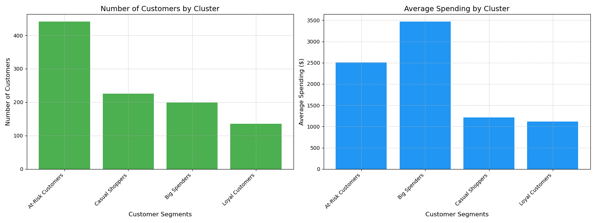

GitHub
GitHub
Jeremy Barry

Data Science, Mathematics, Finance student at William & Mary.
Hello! I'm Jeremy Barry from Newburyport, Massachusetts. I study Data Science, Finance, and Mathematics at William & Mary.
This summer, I'm joining NT Concepts as a Data Science / Machine Learning Intern. I'm especially interested in machine learning, entrepreneurship, and practical data systems.
Technologies I'm Familiar With:
GitHub
 SQL
SQL
 Excel
Excel
 Python
Python
 PyTorch
PyTorch
 Pandas
Pandas
 NumPy
NumPy
 R
R
 Power BI
Power BI
 Postgres
Postgres
 Supabase
Supabase
 Netlify
Netlify
 Vercel
Vercel
 Railway
Railway
 AWS
AWS
 Google Cloud
Google Cloud
 Azure
Azure
 Codex
Codex
 React
React
 TypeScript
TypeScript
 CapCut
CapCut
Projects
FiftyPlates
January 2026
FiftyPlates is an iOS road trip game I made in one weekend while watching the NFL playoffs. You select states when you see their license plates on a road trip, then track the drive as the map fills in.
Crawllr
August 2025 - March 2026
My very first venture. Crawllr is a social media app that allows people to track and share their adventures (think Strava + Instagram mainly for college students). We grew this to over 400 users before moving onto bigger and better things.
Marine Learning
October 2025
Built a computer vision pipeline at William & Mary’s first annual hackathon to identify benthic species from seafloor footage, using YOLO for detection and DenseNet-121 for classification. Added custom random deletion augmentation and reached about 94% test accuracy, with training accuracy around 94–95%.
Advanced Analytics for Mario Kart
September 2025
This is my first ever full-stack web app I built. I made it for fun and for my friends, using React and Firebase to track Mario Kart race results, player stats, and performance trends over time with a custom ELO rating system. You'll think it's one of the coolest things I've made if you nerd out over Mario Kart.
LiamBot - AI Assistant
December 2024
Built and deployed an AI assistant designed to respond like my little brother, originally just as a fun side project. It ended up being a great way to learn APIs, AI workflows, and full-stack development, and gave me early hands-on experience building and integrating LLM applications.
Radiation Data Analysis
August 2023
At the C-10 Research & Education Foundation, analyzed 10,000+ radiation monitoring records across 15 datasets using advanced Excel modeling. Identified a previously unknown 314% reporting variance in data reviewed by the New Hampshire Department of Health.

Customer Segmentation Analysis
March 2024
Used Python and RFM modeling to segment customer behavior for a small local business, helping group customers for retention and targeting analysis. Looking back, the visualizations were pretty rough, but it’s cool seeing that I was building clustering models as a high schooler.

Loan Payment Calculator
September 2024
Took a school project a step further by building an interactive loan repayment calculator using Pandas, Matplotlib, and Seaborn to visualize payoff timelines and long-term payment trends.